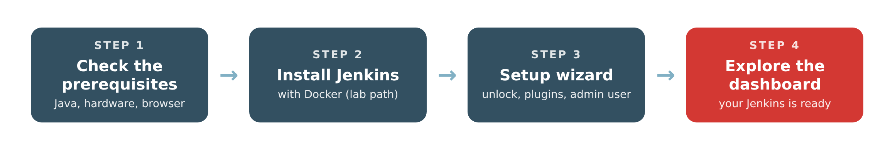

Lab 1 · Installing Jenkins
Lab 1 – Installing Jenkins
In this lab you install Jenkins, the automation server that will run every pipeline in this module, and you prepare it for use.
Learning objectives
By the end of this lab, you will be able to:
- Understand the prerequisites for installing Jenkins.
- Install Jenkins on various operating systems and platforms.
- Complete the post-installation steps to access the Jenkins user interface.

How to use this lab
- Read pages 1 and 2 to understand the prerequisites and the different ways to install Jenkins.
- Do the hands-on part with Docker (page 2.4): this is the path everyone follows in the lab.
- Complete the setup wizard (page 3), then explore the dashboard (page 4).
- Check your work with the checklist on page 5. Stuck? Read the troubleshooting section on the same page.
The installation itself takes about 10 minutes.